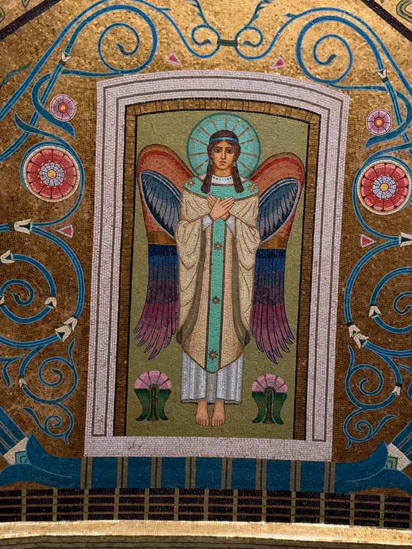
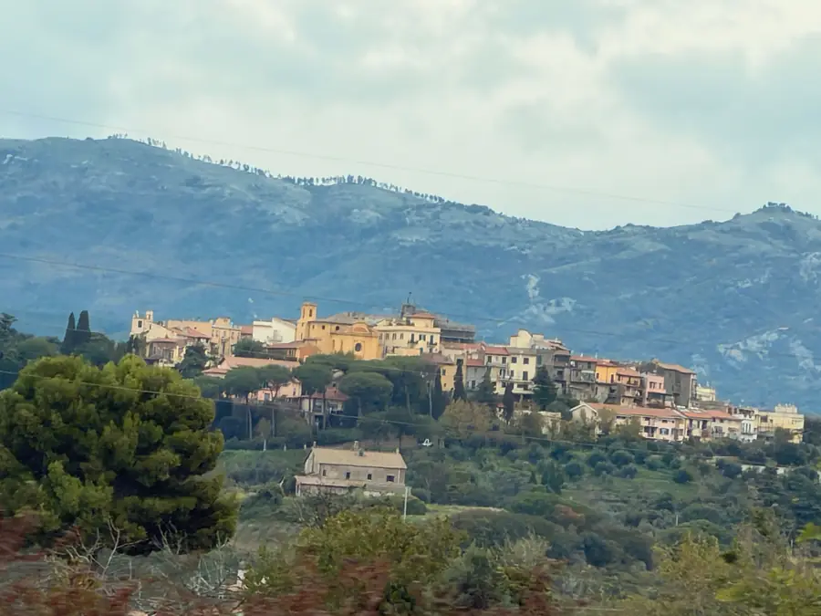
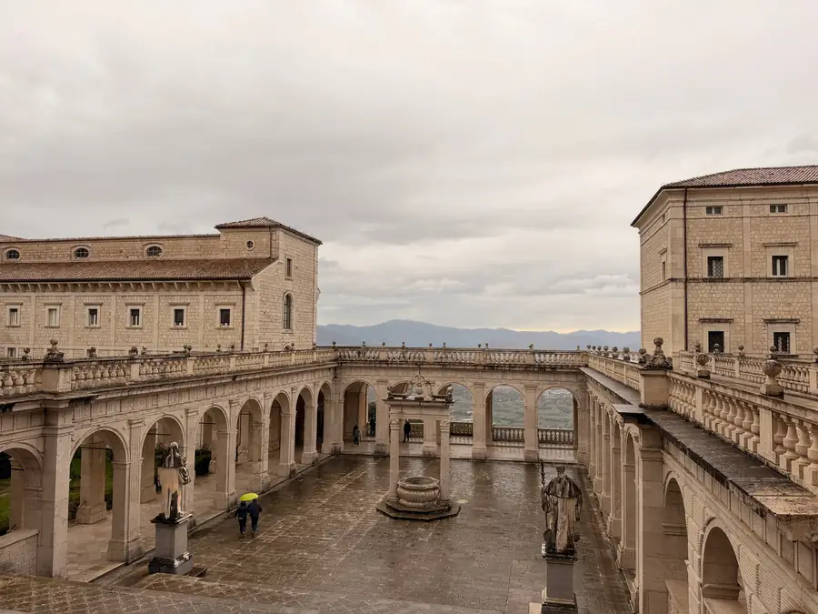
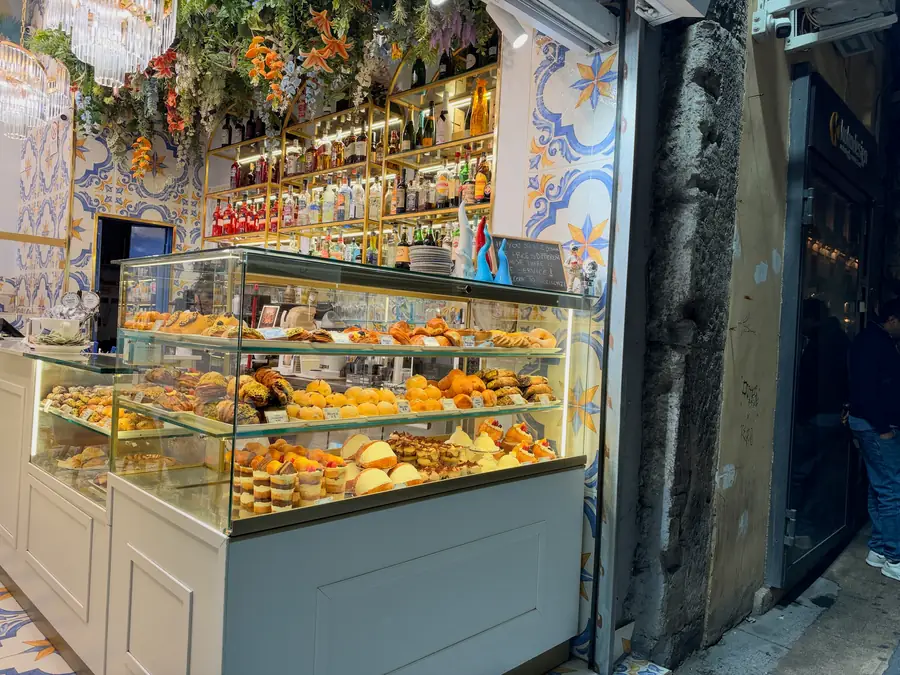
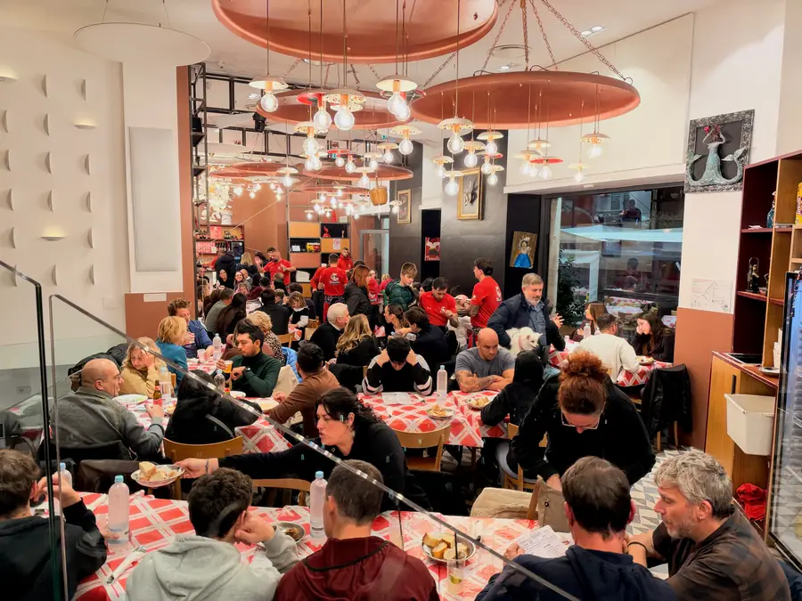

In the morning we packed our things, loaded everything into the car and left the hotel before eleven. We left the city by the Appian Way — that very one, the ancient one, along which legions once marched, and later the apostles too.
The first stop was the little church of Domine Quo Vadis. It stands where, according to tradition, the Apostle Peter, leaving Rome to escape persecution, met Christ and asked: “Lord, whither goest thou?” And heard that the Lord was going to Rome to be crucified again. Peter returned and accepted martyrdom. Hence the title of Sienkiewicz's famous novel “Quo Vadis.” Inside is a stone with the imprints of feet. It's a copy; the original is kept in the Basilica of San Sebastiano. But the place is no less for that. We didn't go to the Catacombs of St Callixtus this time — we had been there before.

And here's what's interesting, friends. The Gospel read that day was precisely about Peter: “But whom say ye that I am?” — “The Christ of God.” You stand at the stone where Peter asked “whither goest thou,” and you remember how he once answered the main question. A coincidence, you'll say. Maybe.



We had lunch right there, at a trattoria on the Appian Way. Scialatielli with porcini mushrooms, tagliolini with guanciale and spinach risotto.
Then we got onto the A1 motorway. At the entrance the barrier was open, and I didn't take a ticket. And in Italy, exiting without a ticket means a conversation with an operator. We prepared a phrase for this case in advance: “Sono entrato senza biglietto, la barriera era aperta” — “I entered without a ticket, the barrier was open.” Sounds like the beginning of a detective story.

Then Montecassino, the abbey of St Benedict. Here in the sixth century Benedict founded a monastery and wrote his Rule, by which most of Western monasticism later lived. In the crypt are the relics of Benedict and his sister Scholastica. The monastery was destroyed four times: by the Lombards in 577, by the Saracens in 883, by an earthquake in 1349 and by the bombing of 1944. And each time it was rebuilt anew. Their motto is “Succisa virescit,” “cut down, it grows green again.” To my mind, this is not only about the monastery, it's about the Church in general. Nearby is the Polish cemetery: in May of '44 it was the Poles who took this mountain, and many of them stayed there.



And in the evening, Naples. Friends! If the thought ever occurs to you to drive into Naples by car, think again. And then again. The driving there is a nightmare, the parking is a separate nightmare. To everyone who will be planning Naples: stay somewhere in Ercolano or Torre del Greco, where you can park the car, and come into the city as guests.
This time our apartment is big, three bedrooms, each of us has our own. After the Roman room without a number — sheer luxury.



We went to dinner at the trattoria “Da Nennella.” There's a huge line there, and the waiters dance on the tables. I'm serious — right on the tables. The line, by the way, didn't stop us. After the Colosseum we take lines philosophically, but here we decided to wait it out.


Tomorrow we just walk around the city.